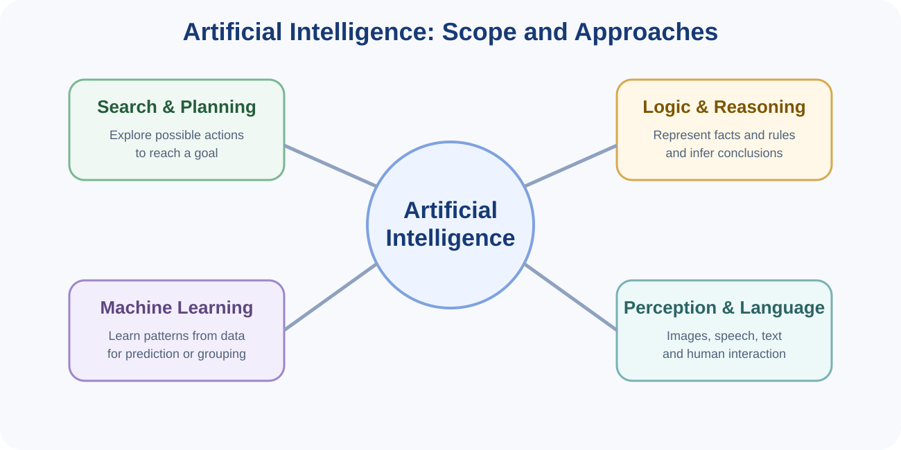
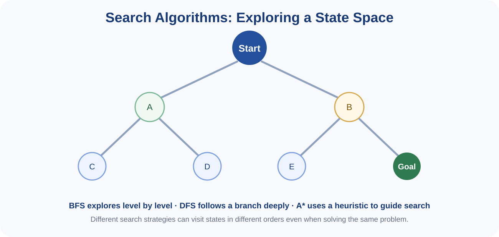
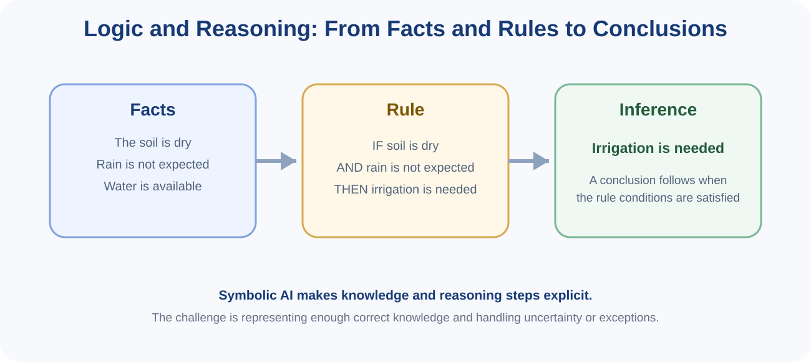
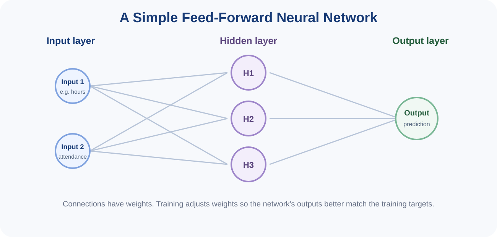

You can read these notes on screen or use the button below to print or save them as PDF.
Artificial Intelligence (AI) is the field concerned with designing computer systems that perform tasks associated with intelligent behaviour. These tasks may include problem solving, planning, reasoning, learning, perception, language understanding and decision support.
AI is broader than Machine Learning. Machine Learning is one important approach within AI, but AI also includes techniques based on search, explicit rules, logic, planning and knowledge representation.

An AI system may receive information about its environment, process that information and choose an action or produce an output. In some applications, this can be described using the idea of an agent: something that perceives a situation and acts towards a goal.
Examples include:
Many AI problems can be represented as a search through possible states. A state describes a particular situation. An action moves the system from one state to another. The aim is to find a sequence of actions that reaches a goal.

A state space is the collection of possible states that can be reached in a problem. For example, in a maze, each position can be considered a state. In route planning, each location can be a state and each road connection can be an action.
BFS explores the search space level by level. It first examines states one step from the start, then states two steps away, and so on. When every step has the same cost, BFS can find a shortest path in terms of the number of steps.
DFS follows one branch as deeply as possible before backtracking. It can use less memory in some problems, but it may explore a long or unhelpful branch before finding a goal, and it does not generally guarantee the shortest path.
A heuristic is an estimate of how close a state is to the goal. A* search combines the cost already incurred with a heuristic estimate of the remaining cost. A useful heuristic can guide the search toward promising states rather than exploring blindly.
| Method | Main idea | Useful intuition |
|---|---|---|
| BFS | Explore level by level | Systematic and can find shortest-step paths when step costs are equal |
| DFS | Explore one branch deeply before backtracking | Simple and sometimes memory efficient, but may take an unhelpful route |
| A* | Use path cost plus heuristic guidance | Can search efficiently when the heuristic is informative |
Another classical AI approach represents knowledge explicitly using facts, rules and formal reasoning. Instead of learning every relationship from data, a symbolic system may be given knowledge by human experts.

A fact is a statement treated as known within the system. A rule describes how one set of conditions leads to a conclusion. A simple rule may be written as:
If the system knows that the soil is dry and rain is not expected, it can infer that irrigation is needed.
Inference is the process of deriving a conclusion from available knowledge. In rule-based systems, reasoning may proceed by applying rules whose conditions are satisfied.
Symbolic reasoning is valuable because the knowledge and reasoning steps can often be inspected directly. However, the system depends on the quality and completeness of the rules. Real environments may also contain uncertainty, exceptions or conflicting information that simple rules do not capture easily.
Logic-based AI and Machine Learning are not necessarily competitors. A practical system may use learned models for perception and explicit rules for safety or decision policy. For example, an image model may detect a crop problem while a rule base controls what advice is permitted under specific conditions.
Artificial neural networks are Machine Learning models composed of connected processing units often called neurons or nodes. They are inspired loosely by biological neural systems, but they are mathematical and computational models rather than replicas of the human brain.

Input variables enter the network. Connections between nodes have numerical weights. A node combines its incoming values and applies an activation function to produce an output. The activation allows networks to represent relationships that are more complex than a simple straight line.
During training, the network produces outputs for training examples, compares them with the desired targets and adjusts the connection weights to reduce error. Repeating this process over many examples allows the network to learn useful patterns.
Neural networks are widely used for image recognition, speech processing, natural language processing and other complex pattern-recognition tasks. Deep learning generally refers to neural networks with multiple representation-learning layers.
The appropriate AI technique depends on the structure of the problem.
| Problem | Possible approach | Why |
|---|---|---|
| Find a route to a destination | Search / planning | The problem involves states, actions and goals |
| Apply explicit expert rules | Logic / rule-based reasoning | Knowledge can be represented as facts and rules |
| Predict a label from examples | Supervised Machine Learning | Historical labelled data are available |
| Recognise images or speech | Neural networks / deep learning | Complex high-dimensional patterns must be learned |
| Group unlabeled observations | Clustering | The aim is to discover structure without predefined targets |